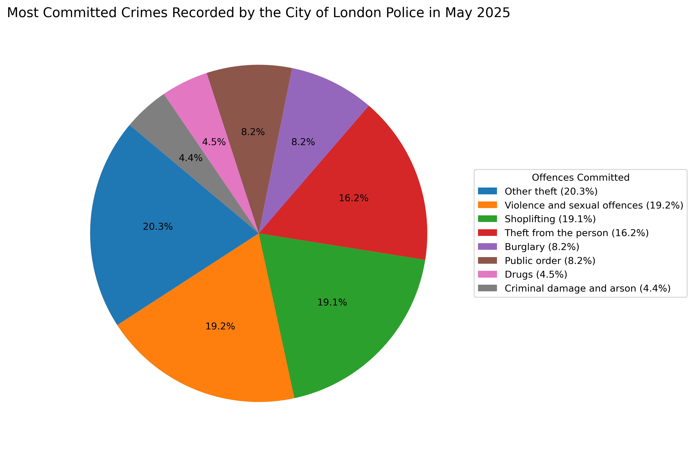

Most Committed Crimes Recorded by the City of London Police in May 2025

Legend
- Other theft (20.3%)
- Violence and sexual offences (19.2%)
- Shoplifting (19.1%)
- Theft from the person (16.2%)
- Burglary (8.2%)
- Public order (8.2%)
- Drugs (4.5%)
- Criminal damage and arson (4.4%)